Home
About
Cristiano Ronaldo is a world-famous football player known for his incredible skill, speed, and goal-scoring ability. He has played for top clubs like Manchester United, Real Madrid, Juventus, and Al Nassr. Ronaldo is admired for his hard work, discipline, and determination, which have made him one of the greatest players in football history and an inspiration to fans around the world
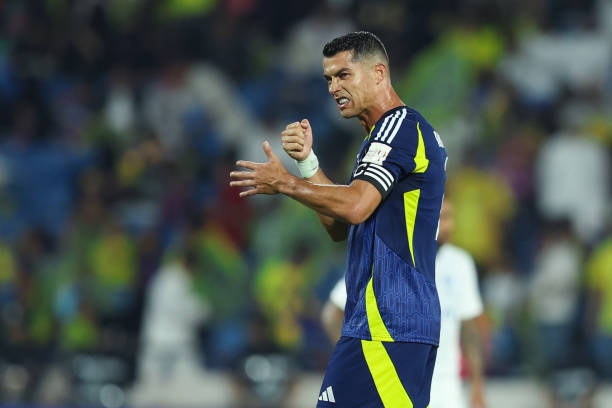
Career
Manchester United
Cristiano Ronaldo first rose to global fame at Manchester United, where he developed from a young talent into one of the most dangerous attackers in the world. Under Sir Alex Ferguson, he improved his speed, skill, and finishing ability, becoming a key player for the team. During his time at the club, he won major trophies including the Premier League and UEFA Champions League, and he also won his first Ballon d’Or, marking the beginning of his legendary career. Ronaldo returned to Manchester United in 2021, over a decade after leaving the club, marking an emotional comeback for fans around the world.
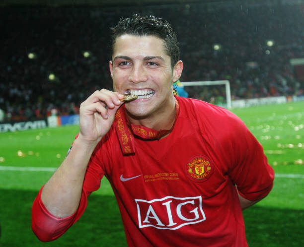
Real Madrid
At Real Madrid, Cristiano Ronaldo reached the peak of his football career and became a true legend of the game. He broke countless records, including becoming the club’s all-time top scorer. Ronaldo led Real Madrid to multiple Champions League titles and delivered unforgettable performances in big matches. His rivalry with other top players during this era helped define modern football, and his time in Madrid is widely considered the most dominant period of his career.

Juve ntus
When Ronaldo joined Juventus, he proved that his greatness was not limited to one league. He quickly adapted to Italian football and continued scoring at an elite level. Ronaldo helped Juventus win league titles and brought massive global attention to the club. Even in a more defensive league, he showed consistency, leadership, and professionalism, maintaining his reputation as one of the best goal scorers in football history.
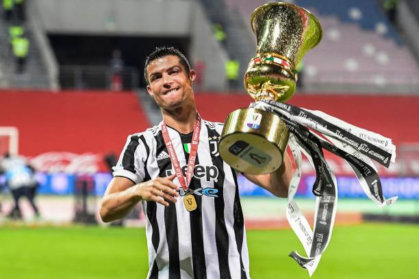
Al Nassr
Cristiano Ronaldo’s move to Al Nassr marked a new chapter in his career and had a huge impact on football in Saudi Arabia. He brought worldwide attention to the league and inspired many young players in the region. Even in a new environment, Ronaldo continued to score goals and perform at a high level, showing his dedication and fitness. His presence at Al Nassr has helped grow the popularity of football in the Middle East.
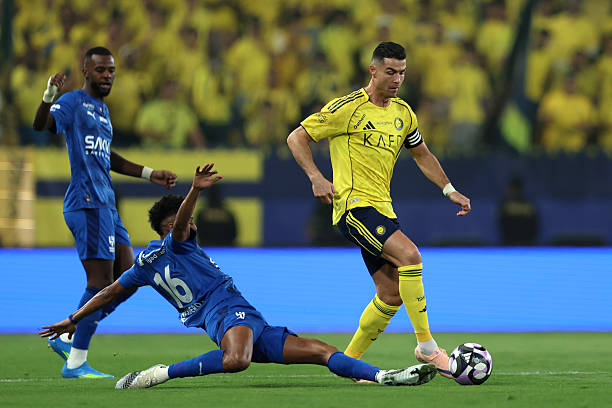
Major Acheivements
Cristiano Ronaldo – Trophy Cabinet 🏆🗄️
- ⭐ 5× Ballon d’Or winner
- ⚽ 850+ career goals scored
- 🏆 All-time top scorer in UEFA Champions League
- 🏆 5× UEFA Champions League winner
- 🎖️ UEFA Euro 2016 champion with Portugal
- 👑 UEFA Nations League 2019 winner
- 🌍 All-time top scorer in international football
- 🏆 League titles in England, Spain, and Italy
- 👟 Multiple Golden Boots winner
- 🥇 FIFA Best / Player of the Year awards
- 👑 Most goals in UEFA Champions League knockout stages
- 🚀 Most international goals in men’s football history
- 🔥 Most hat-tricks in international football
- 🐐 Widely considered one of the greatest footballers of all time
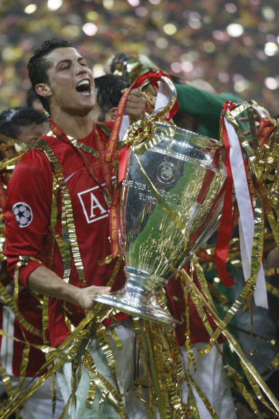
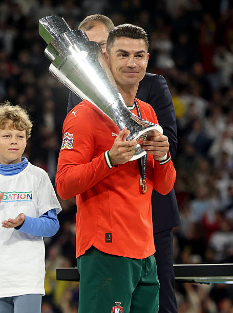
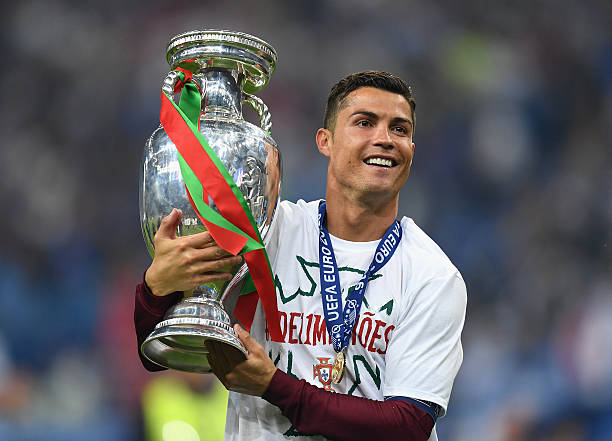
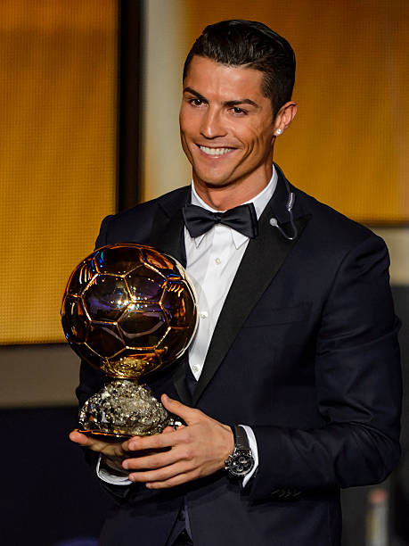
Career Highlights ⭐🔥
🚲 Bicycle Kick vs Juventus (2018)
One of Ronaldo's most iconic moments came in the UEFA Champions League against Juventus in 2018. He scored a spectacular bicycle kick that amazed fans around the world and is widely regarded as one of the greatest goals in football history. The goal was so impressive that even the Juventus supporters applauded him from the stands. ⚽🔥
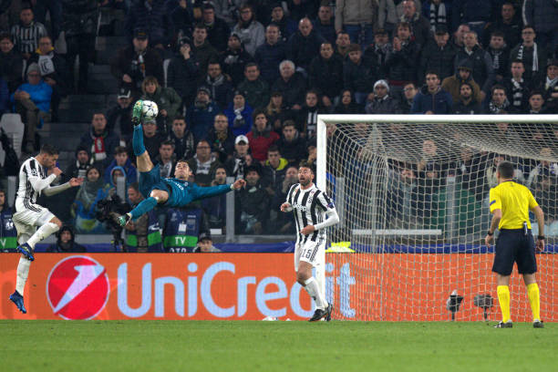
🥈 UEFA Euro 2016 Triumph
Cristiano Ronaldo helped lead Portugal to their first major international trophy at UEFA Euro 2016. Despite being injured in the final, he remained on the sidelines encouraging his teammates as Portugal defeated France 1–0. The victory was one of the proudest moments of his career and a historic achievement for his country. 🏆🔥
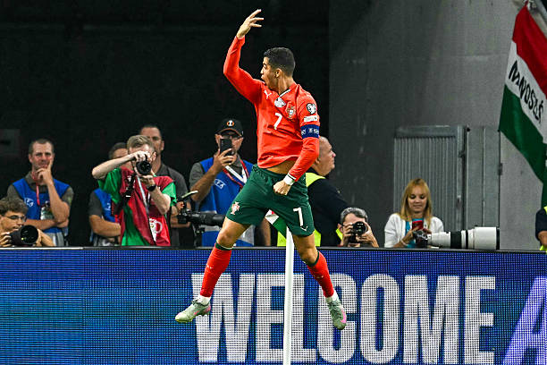
👑 Real Madrid's All-Time Top Scorer
During his time at Real Madrid, Ronaldo became the club's all-time leading goal scorer with an incredible 450 goals. He broke numerous records and helped the team win multiple trophies, including four UEFA Champions League titles. His remarkable goal-scoring ability and consistency made him a true legend of the club. ⚽🔥
🌍 International Goals Record
Cristiano Ronaldo made history by becoming the highest-scoring player in men's international football. Through years of dedication and consistent performances for Portugal, he broke the previous record and continued adding to his goal tally. This achievement highlights his longevity, determination, and impact on the international stage.
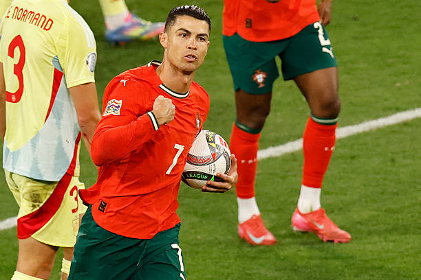